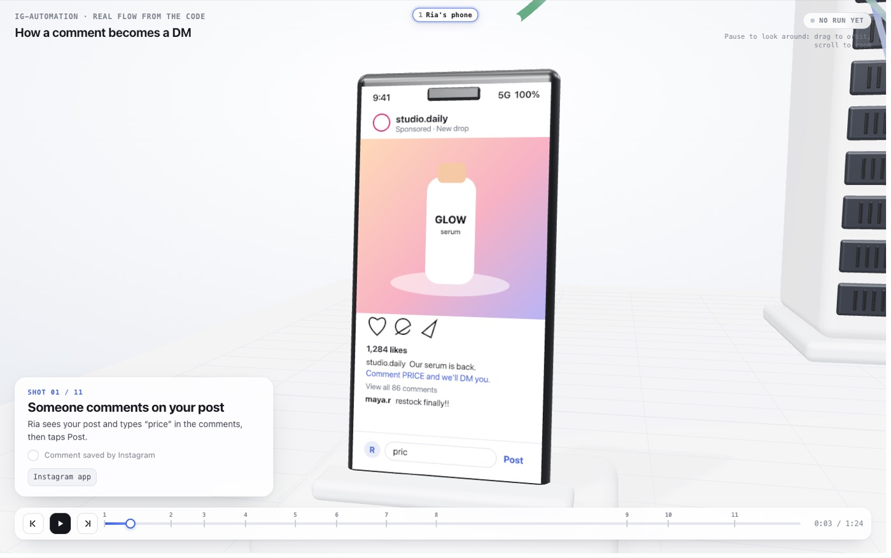
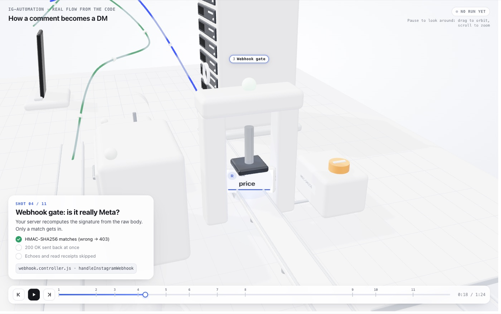
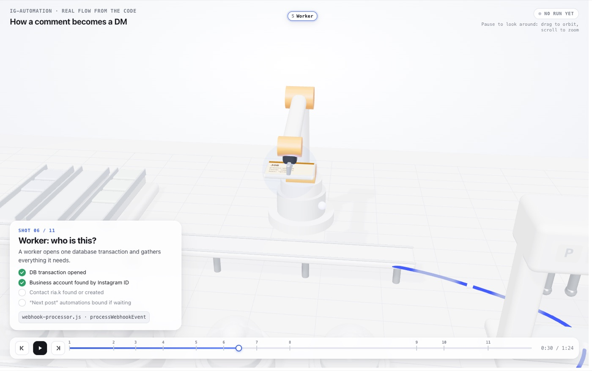
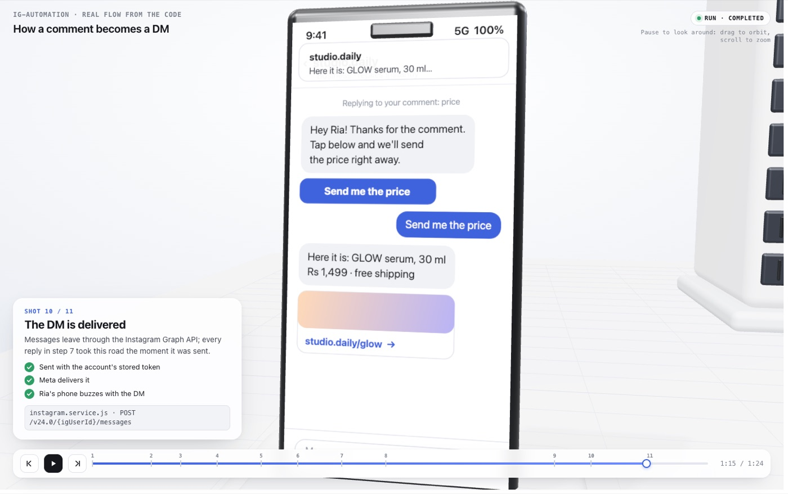
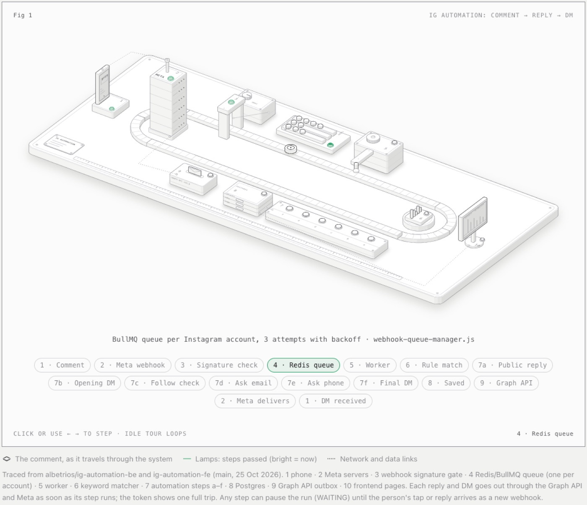

Press play, use ← → to jump between shots, or pause and drag to orbit the scene.
What I tried
The Anatomy skill explains a technical idea by drawing it as a real machine. I pointed it at my ig-automation project and asked what happens when someone comments “price” on a post.
- v1: an interactive isometric figure, a loop conveyor past ten stations (Meta, webhook gate, Redis, worker, keyword lock, Postgres, Graph API).
- v2: a three.js camera fly-through in 11 shots. The comment travels from the phone, through each check, and comes back as a DM.
- The steps, files and API routes are real. The shop, product and price are made up for the story.
Stills





